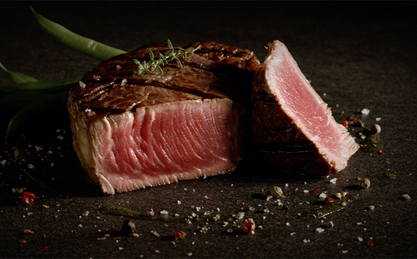

Meat Recipes

Discover a variety of delicious meat recipes that are perfect for any occasion. From grilled steaks to slow-cooked roasts, find your next favorite dish here!
Ingredients
- Quality cuts of meat (steak, roast, etc.)
- Salt and pepper
- Olive oil or butter
- Garlic
- Herbs and spices
- Vegetables of your choice
Instructions
- Preheat your grill, oven, or slow cooker.
- Season the meat with salt, pepper, garlic, herbs, and spices.
- Cook the meat to your desired level of doneness, using a meat thermometer to ensure proper cooking temperatures.
- Let the meat rest before slicing and serving with your favorite sides. Enjoy!
Back to Meat House